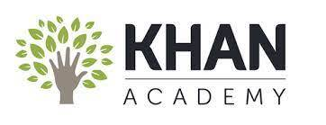

It all started in a small town in Iowa. I first started to gain interest in
computer programming because my freshman math teacher told the class that if
we completed an introduction to an online coding program on Khan Academy that
we could get some extra credit. I ended up falling in love with the coding,
completed the entire online program on my own accord, and still wanted more.
A few years later I was starting my first year at Iowa State University studying
software engineering. After not too long, I found that program to be
way to broad for what I wanted to study. However, I did come away from ISU with
a better understanding of what major I wanted to pursue.
Throughout my time at Iowa State, I also learned a lot about how much I enjoyed
serving in the military. I had enlisted in the Army National Guard as a junior
in high school. I couldn't get away from the idea that I wanted to do something
more than just the weekend drills I was doing each month with the National Guard.
When I started up at Utah Valley University, I also decided to join the Air Force
ROTC program. Now I have a job set aside for me as a Combat Systems Officer once
I graduate.
I hope to apply what I learned through my degree to my Air Force career, yet even
if I can't find a way for the two paths to intertwine, I will still be using what
I have learned throughout my education. I hope to create websites as a side project
for myself while I am an officer in the Air Force. I know that I find a lot of joy
through making websites, so I would see it more as doing what I love than just some
extra work. Plus, I will be able to keep myself competitive in my civilian career
skills if I continue to create websites while I am serving.